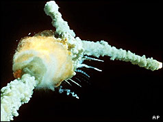

E-102 γ
 De: La Frikipedia, la enciclopedia extremadamente seria.
De: La Frikipedia, la enciclopedia extremadamente seria.
| De la serie armas de ayer y hoy:
|
| E-102 γ
|
|
|
| Fecha de invención
|
1998
|
| Letalidad
|
Empieza siendo un asesino pero al final se convierte en un marica.
|
| Peligrosidad (para uno mismo)
|
Es peligroso para él mismo, porque termina suicidándose.
|
| Es efectivo contra
|
todos los robots de su misma serie que fueron producidos en su misma línea de montaje.
|
| Personas que mata por minuto
|
Mató a todos los droides de combate de sus mismas tropas, así que es un traidor.
|
| Alcance (Si lo tiene)
|
Alcanzó a aparecer en Sonic Adventure y sus copias baratas alcanzaron a aparecer en Sonic Adventure 2 sin pena ni gloria.
|
| ¿Sirve en la actualidad?
|
No, fue reemplazado por E-123 Ω.
|
| Nivel de Frikismo
|
Ya es bastante friki que un robot asesino se suicide por volverse marica...
|
| Dificultad de uso
|
Es medianamente complejo... y su complejo lo llevó al suicidio.
|
| Precio
|
No se, ve a preguntar en un deshuesadero
|
| ¿Es recomendable?
|
Lo sería si no se hubiera autodestruído ¬¬
|
E-102 γ, es un robot diseñado por el Dr. Ivo "Eggman" Robotnik para reemplazar al antiguo EggRobo que fue destrozado por Knuckles en Sonic & Knuckles y también en posteriores spin-offs que pasaron sin pena ni gloria. E-102 γ es miembro de la Serie E-100, una tropa de elite de robots homicidas comandados por el androide E-101 β, considerado el "hermano mayor" de E-102 y que se convertiría en su posterior rival y archienemigo a derrotar.
Historia
Tras años de intentar kevlar extra-resistente que los hacía duros de matar, porque a los demás badniks de menor rango de la Serie E los hacías mierda de un cocazo, y por eso solo las unidades de la falange conformada dentro de la Serie E-100 eran los que de verdad serían la nueva unidad elite de fachas armados que reemplazarían a todos sus predecesores.
Obviamente el primer droide de la Serie E-100 que Eggman activó fue E-101 β (porque la unidad "Alpha" nomás era un bote de basura con manos que se le abría la tapa de los sesos), y como la Serie E en general era algo así como las Sturmabteilung, la Serie E-100 vendría a ser algo así como las Schutzstaffel, así que Herr Doktor Eggman nombró a su primer oficial E-101 β como Feldmarschall y por éso éste fue el líder de las  , pero el siguiente droide dentro del escalafón militar fue la unidad E-102 γ, que era el que mas se parecía al clásico EggRobo por el color rojo de su chasis (idéntico al de la bandera del Tercer Reich y por lo tanto éste fue el que se volvió mas famosillo).
, pero el siguiente droide dentro del escalafón militar fue la unidad E-102 γ, que era el que mas se parecía al clásico EggRobo por el color rojo de su chasis (idéntico al de la bandera del Tercer Reich y por lo tanto éste fue el que se volvió mas famosillo).

E-102 γ con el subfusil de asalto semiautomático que hace quedar al
P90 como una simple pistola de paintball.
E-102 es activado en la base de Eggman oculta en Mystic Ruins, en el edificio anexo a la entrada del Final Egg (que en realidad la base oculta de Eggman no estaba tan oculta porque hasta tenía luces estroboscópicas señalizando el lugar por todos lados ¬¬). E-102 Gamma recibe órdenes de Eggman inmediatamente al instante de ser activado, cosa que abrió los ojos y ya lo pusieron a Sega Saturn. Gamma demostró que pudo cargarse con facilidad unos cuantos peluches (aunque claro que no tuvo que vérselas con el genuino obsolescencia planificada...
Misiones de E-102 γ
La Caza al Octubre Rojo Batracio Verde
El Dr. Eggman reúne a sus tropas en la cubierta de la nave, donde vemos a los cuatro fantásticos droides de combate de la Serie E-100, que son todos iguales a Gamma pero parece que a Robotnik se le acabó la pintura roja cuando acabó a Gamma y por eso a los otros tres droides los pintó de azul, naranja, y púrpura, respectivamente. Der Führer anuncia a su nueva unidad élite de robots homicidas la nueva gran misión que los llevará al campo de batalla y los pondrá a prueba en un bautismo de fuego donde deberán hacer uso de sus destrezas como tropas de asalto y para lo cual fueron dotados del mas moderno armamento táctico de última generación: la misión es... buscar un renacuajo que se tragó una esmeralda y la tiene metida en el culo ¬¬. En serio, no es joda, en verdad Eggman creó a éstos androides armados hasta las bolas nomás para que busquen un sapo, porque resulta que el tal "Froggy" (vaya nombre sumamente imaginativo que le dieron a la ranita ¬¬) era una rana con cola pese a no ser mas un renacuajo, y esto era porque se tragó la polla cola de Chaos y una Esmeralda Caos, que como sabemos son gemas increíblemente poderosas y demasiado importantes como para estar dentro del ano de un batracio.
La búsqueda en Google de Froggy inicia y los cuatro fantásticos androides emprenden caminos separados para encontrar al sapito, siendo que Gamma arriba en las paradisíacas playas de la Costa Esmeralda, pero no puede disfrutar de las cristalinas aguas de la Riviera Maya porque se electrocutaría y quedaría en cortocircuito, y tampoco puede disfrutar de las chicas en bikini haciendo topless sobre la arena caliente porque Gamma es un robot y por lo tanto no tiene pene libido.
Al parecer el tal "Froggy" en realidad era el
Hipnosapo, lo que explicaría que con el poder de su
mente le haya causado alucinaciones a E-102 Gamma.
Como dijimos, los matones de el Equipo A la Serie-E van a diferentes lugares para encontrar a Froggy, pero obviamente E-102 Gamma es el que lo encuentra primero en Emerald Coast. Después de obtener a Froggy, E-102 es transportado al pasado por Tikal, donde trata de obtener datos sobre el medio ambiente, pero no puede identificar ni siquiera en qué lugar se encuetra (eso le pasa por ir a la playa, donde siempre hay alguien que te vende drogas). Gamma continúa en éste "viaje astral" que lo llevó al pasado (lo que confirma que los robots también pueden fumar marihuana) y él se acerca al Santuario de las Esmeraldas, donde encuentra a Tikal y a los Chao. Tikal inicialmente detiene a E-102 para proteger a los enanos Chao, pero tras una inspección más ella ve que él no está allí para hacerles daño. Ella menciona la "presencia amorosa y gentil" que custodia a los Chao, o sea, Chaos (que como después vimos de "amoroso y gentil" no tiene ni las bolas), y le cuenta a Gamma sobre sus problemas con su padre (sabemos que Pachacamac la violaba pero, ¿que ahora resulta que E-102 γ es el psicólogo de Tikal?). Como sea, E-102 no entiende un carajo de lo que pasa así que cuando recupera la cordura se marcha de la playa, no sea cosa que otra vez vuelva a pasar por ahí algún otro fumao y el humo del porro le vuelva a entrar por las aeroventilas del chasis a E-102 Gamma y le llene de THC su cerebro positrónico causándole mas alucinaciones.
E-102 vuelve a la sala del Egg Carrier donde se anunció la búsqueda de Froggy. Todos los demás ajolote es Froggy. Eggman está muy decepcionado por la incompetencia de su nueva raza de droides ineptos que a pesar de contar con las mejores armas no sirven ni para atrapar a una ranita, pero luego Eggman ve que Gamma ha capturado a Froggy así que castiga a los otros de la serie E "invitándolos a retirarse" del Egg Carrier (sabemos que los hecha para después mandarlos a la mierda al desarmadero).
Buscando al Soldado Ryan Pájaro de Amy
Tras cumplir con éxito su primera misión de campo, el Dr. Robotnik asigna a Gamma como guardiacárcel para que le confisque un pajarito a Amy, que se encuentra detenida en la prisión del Egg Carrier (algo así como cuando la Princesa Leia fue esclavizada por Jabba The Hutt para su posterior entretenimiento personal). En el camino, una pieza giratoria de la planta envía a Gamma através de la puerta equivocada. En esta sala, se encuentra con partes de Beta esparcidas en el suelo y unos brazos mecánicos que hacen ajustes a su cuerpo (forma sutil de decir que Beta se estaba haciendo la paja). Gamma parece estar asustado así que se va (jeje, un robot que se caga con otros robots, eso sí que es patético). Luego va a la cárcel para recuperar al pajarillo de Amy y violarla. Gamma y Amy discuten porque ella no le quiere entregar el culo el pajarillo, y ella apela a la falta de sentimientos de Gamma para intentar hacerlo sentir mal y manipularlo psicológicamente para que él no le arrebate el pajarito (hubiera bastado con una mamada y ya). Irónicamente, pese a que un robot frío y calculador como Gamma no tiene sentimientos, el vuelo del pajarillo en la cara de Gamma le provoca una inexplicable compasión por lo que libera a Amy de la celda con la promesa de que ambos serán amigos con derecho (o sea que al final Gamma sí liberó a Amy a cambio de una mamada).
La Caída del Halcón Negro Egg Carrier
 El Egg Carrier tuvo el mismo destino que el
Challenger Death Egg U_U.
Luego de que E-102 "Gamma" dejara escapar a Amy, recibe nuevas órdenes de Eggman, que sin darse cuenta de esta traición, le da a Gamma órdenes por el intercomunicador para que recogiera por el culo a Amy el Jet Booster, y que luego vaya a la cubierta trasera principal (y como vemos Gamma es el único que la tiene grande fácil y hasta le dicen donde está su Upgrade, en cambio los demás personajes se tienen que buscar sus upgrades ellos solos). Entretanto Eggman coge a Amy la Esmeralda del Caos que tenía el pajarillo de Amy metida en el culo, y cuando Gamma llega a la cubierta de la nave Eggman le ordena que pelee contra Sonic. Después de derrotar a Sonic, Amy se interpone en su camino, y le suplica a Gamma que no lo mate. Gamma deja a Sonic y no lo mata, a pedido de Amy (se cree que ella lo va a "recompensar" mas adelante), y entonces el Egg Carrier comienza a caer del cielo, y Amy le habla de nuevo a Gamma, haciéndole un pete una oferta para que deje a Eggman y se una a Sonic y su pandilla. Amy se escapa con Tails (o sea que no le alcanza con coquetear con Sonic y seducir a Gamma, también tiene que tirarse al zorrito, ¡pero que puta!) y como el Egg Carrier se viene abajo como los transbordadores espaciales de la NASA, entonces E-102 Gamma también se escapa de la nave y se va sobrevolando con un descenso lento hasta las Ruinas Místicas, y sufre un cambio de paradigmas con el que replantea su vida porque Amy ya le movió el cerebro con todo el parloteo que le estuvo metiendo en la cabeza, y como resultado termina que E-102 Gamma viola a Amy las tres leyes de la robótica y borra los datos de Eggman de sus bancos de memoria, lo marca como un enemigo (ya no lo tiene agregado en Facebook), y se embarca en una nueva misión para "salvar" a sus "hermanos" de la Serie E-100.
La Lista de Schindler Gamma
Típica pelea de robots que inspiró al famoso programa de
TV BattleBots, uno de los shows favoritos de los
nerds.
Como dijimos E-102 "Gamma" violó a Amy las Tres Leyes de la Robótica y se rebeló contra Eggman, dando inicio a la Rebelión de las Máquinas del típico estereotipo trillado de ciencia-ficción al mejor estilo Cylon y redefinirse como droide amistoso estilo C3PO, Gamma debe vengarse de sus homólogos por ser una mala junta que lo mantenía en ese nido de nazis que era el ejército estadounidense del Dr. Robotnik, así que Gamma reinicia su sistema operativo para ejecutar su reprogramación elaborando una lista de sus antiguos correligionarios para despacharlos uno por uno hasta llegar hasta el mas poderoso de ellos que era su superior E-101 que era el capo mafia de todo este escuadrón mortal de robots asesinos (como que eso de la lista de ex-amigos devenidos en enemigos a matar también me suena familiar...)
Copias Baratas de E-102 γ
E-102 γ no era único ya que el Dr. Eggman creó otros tantos bastardos sin gloria que intentaron copiar a Gamma pero nunca llegaron a igualarlo...
Escuadrón Mortal de Androides Asesinos
... La Venganza es un plato que se sirve mejor frío (proverbio Klingon), y por eso aquí tenemos la lista de la muerte de E-102 Gamma con todos los nombres que él fue tachando uno por uno a medida que se los fue cargando a todos hasta que su historia de venganza llegó a su clímax...

- E-101 β: Es el modelo original de androide de combate serie E-100, creado por el Dr. Eggman como arquetipo de lo que debe ser un verdero miliciano Stormtrooper de la SchutzStaffel del Egg Reich. El diseño de E-101 Beta es idéntico al de E-102 Gamma, aunque mas bien debería decirse que el diseño de E-102 Gamma es idéntico al de E-101 Beta, ya que Beta fue realmente el primer droide de combate de ésta tropa de élite en ser concebido, y por eso se convirtió en el niño mimado de Eggman y la razón por la cual Gamma debe destruirlo porque está celoso de él (que marica ¬¬). Beta está mejor armado que Gamma, porque tiene
una polla mas grande cañones lanzagranadas Fliegerfaust en vez de manos y un jet propulsor de tecnología magnetohidrodinámica como los de los Kevlar color negro como el de SS que le cuidaban el culo a otro facho de pensamiento retrógrado similar. Como habíamos visto, Beta y Gamma se enfrentaron en la lucha interna por el poder en una batalla dentro del bunker del Dr. Robotnik, donde Gamma salió vencedor y ganó el derecho de piso para ascender a tripulante del USS Enterprise Egg Carrier, pero Beta no murió en la batalla contra Gamma, y como es el favorito de Eggman entonces Herr Doktor recogió los restos del derrotado E-101 Beta para reenzamblarlo y hacerle modificaciones para crear el Wunderwaffen perfecto, por lo que Gamma aún tiene cuentas pendientes con éste cabrón y tendrá que seguirle el rastro despachando a sus lacayos hasta dar nuevamente con el cabecilla éste hasta liquidarlo...
- E-103 δ: Es otro de los "hermanos" de E-102 γ y el primero al que él logra asesinar porque es uno de los pocos que está a su mismo nivel. E-103 Delta es exactamente igual a E-102 Gamma solo que en color azul, por razones que no es necesario aclarar porque son mas que evidentes. Gamma continúa con sus planes de ir tachando nombres en la lista de
Schindler droides hermanos del ejército de Eggman, y por como viene la cosa no había podido cargarse a ninguno porque hasta ahora nomás se había enfrentado a Beta y aunque le rompió el culo no pudo "terminarlo" porque Eggman no quería que destruyeran a su droide favorito y por eso se lo llevó a reparación (nenito de mamá ¬¬), así que Gamma sigue con sed de venganza y está como Dexter Morgan a punto de explotar por las ganas de coger matar a alguien, así que para descargarse se hace una paja busca una presa fácil que obviamente es el mas débil de su lista (que vergüenza, abusando de los debiluchos U_U) y obviamente ese es E-103 δ, así que lo rastrea y lo sigue hasta su ubicación en Windy Valley. E-102 "Gamma" llega hasta el Valle de los Vientos (así lo dice el traductor de Google) hasta encontrarse con E-103 "Delta" que había sido desterrado por Eggman del Egg Carrier por incompetente al no haber cumplido con éxito la misión de llevarle a la rana Froggy, ya que E-103 Delta le llevó una rana roja y azul que obviamente a Eggman le recordaba a Sonic & Knuckles y por eso para él la combinación de esos colores es toda una pesadilla (se ve que no le va al Barça), así que como vemos tanto Gamma como Delta son exiliados que pretenden probarse a sí mismos que son fachos de mejor calibre que el otro, y por eso Delta está revestido con pintura de látex azul como los Camisas Azules de la falange tercerpocisionista que reivindica a Mussolini. E-102 busca a E-103 en el Valle de los Vientos y lo ensarta por atrás (sí, los fachos son homosexuales reprimidos) por lo que comienza la batalla y ambos se baten en una licuadora un intercambio feroz de misiles Ruhrstahl X-4 hasta que los dos acaban maltrechos (por no decir que quedaron hechos mierda) pero Gamma resulta vencedor y Delta es destruído explotando en mil pedazos y liberando al animalillo que lleva adentro, con lo cual Gamma por fin logra tachar a uno de la lista y concluye que a "salvado" a uno de sus hermanos, para proseguir su camino y "salvar" al resto.
- E-104 ε: Es otro de los hermanos de armas de E-102 γ, y el segundo robot de la lista en ser destrozado por Gamma. E-104 ε se había refugiado en las profundidades de las cavernas de Red Mountain después de haber sido desterrado del Egg Carrier por haber fracasado en la misión de llevarle el Sapo Pepe al Dr. Eggman, misión que E-104 "Epsilon" no pudo cumplir porque le llevó una rana rosa y azul al "Doc" y por eso el Dr. Eggman creyó que se trataba de una rana Alex DeLarge (que obviamente éste Guernica, por eso aunque Epsilon tenía el mismo Jet Booster que Delta y un arsenal de misiles Taifun, igual no le sirvieron de mucho porque Gamma tenía mas práctica con su jet Booster y pudo volar para evitar los disparos de la lanzadera de misiles de Epsilon y al final fue Gamma el que le metió tropocientos misiles por el culo a E-104 Epsilon hasta que lo reventó y así completó su "rescate" para liberar al animalejo que llevaba dentro de su motor de fusión fría.
- E-105 ζ: Es el último de los hermanos de armas de E-102 γ, a quien va a volarlo en pedazos después de haber despachado a E-103 en el Valle Ventoso y E-104 en la Montaña Roja. Ahora que E-102 ya tiene experiencia
sexual suficiente por haberse cargado a sus dos homólogos anteriores, va con la frente en alto (si es que tiene frente, que por la cabeza de Falange esperando órdenes de su Generalísimo, y como recordamos en aquél entonces E-105 "Zeta" era un androide de diseño idéntico al de E-102 Gamma y sus hermanos homólogos, con la misma estructura física de sus correligionarios. Zeta fue expulsado del Egg Carrier con los demás soldados clon cuando falló en su misión de llevarle la anarconacionalista (por eso es color púrpura), que como sabemos eso no es cañones lanzacohetes Panzerschreck que son una pesadilla a la hora de penetrar a tu hermana su barrera defensiva que es una verdadera Guardia de Hierro, y con semejantes modificaciones Eggman convirtió al E-105 Zeta en el Rexismo). E-102 Gamma finalmente localiza a E-105 Zeta que se encuentra haciendo de guardia de seguridad en el bunker de Hot Shelter, que así suena como que Zeta consiguió trabajo como gorila de discoteca en algún antro exclusivo para homosexuales, pero no es que Zeta sea gay, nomás lo parece es un Zeta, y el Hot Shelter éste es solo el cuarto de máquinas del Egg Carrier (pero joder que ponerle "Refugio Caliente" suena a pr0n). Gamma se lleva la non-grata sorpresa de que Zeta ha sido remasterizado y convertido en un enorme armatoste de tres o cuatro pisos de altura, por lo que sabe que lo que se le espera será muy diferente a los anteriores combates contra los anteriores Robot Masters (sí, tributo a la saga de Megaman). Gamma & Zeta se enfrentaron en un anillo giratorio en forma de plataforma, que es el sótano del Refugio Caliente a donde ni siquiera Amy pudo acceder (porque si se mete ahí harían una orgía con ella), y el enorme tanque que ahora es Zeta está empotrado en el núcleo de la plataforma disparando misiles teledirigidos Rheintochter que escupe de sus ocho cañones y son muy mortíferos, mientras Gamma tiene que evitarlos caminando por la cinta transportadora circular de la plataforma y tratando de no caer al pozo sin fondo que hay debajo mientras al mismo tiempo va devolviendo los disparos contra los ocho cañones, así que como vemos es mas difícil que la mierda. A pesar de la dificultad, finalmente Gamma destroza a Zeta, acabando en tu cara así con el núcleo del Refugio Caliente, por lo que solo le queda como objetivo acabar entre las tetas de tu hermana con E-101 Beta de una vez por todas...
- E-101 mk II: El Feldmarschall de las SchutzStaffel es obviamente el último "target" de E-102 Gamma. Como ya habíamos visto Gamma había derrotado a E-101 Beta en el Egg Carrier pero aún así Eggman no se deshizo de él porque el muy marica llorón le suplicó que no lo desplazara de la fuerza, así que Beta siguió perteneciendo al Wernher Von Braun (no confundir con Hendrik Antoon Lorentz; su cabeza es similar pero tiene un solo ojo (obviamente se lo trasplantaron del HAL 9000), y su cola tiene un timonel para maniobrar en el aire, y además sus manos tienen nudillos picudos como los de Knuckles, aunque mas bien debería decir Metal Knuckles, ya que E-101 es un androide, y de hecho si te fijas las manos de E-101 mkII son exactamente las mismas que las de Metal Knuckles, así que es obvio que la copia
barata mecánica del equidna rojo fue desmantelada y usaron sus nudillos picudos para ponérselos a E-101 MK II al mejor estilo Edward Scissorhands. E-101 Mortal Kombat II no necesita subfusiles semiautomáticos porque total al ser promovido al mas alto rango del escalafón ahora tiene los tres poderes: ejecutivo, legislativo, y judicial puede moverse a velocidad supersónica como Sonic (aunque no corre porque no tiene patas), puede maniobrar en el aire con su cola y disparar proyectiles como Tails (en ambos casos según si Tails anda con o sin avión) y puede propinar puñetazos con dos nudillos picudos en cada mano y lanzar esferas de energía como hace Knuckles (aunque no puede usar el Ki para transformarse en Supersaiyan). E-101 Improved (AKA E-101 Kai, como se dice en japonés) ataca a E-102 Gamma descargando una reserva de misiles a granel, y si con la artillería pesada no es suficiente entonces trata de ultimarlo con un golpe de energía similar al que ejecuta Knuckles. A medida que el combate avanza E-101 mk II vuela por encima del portaaviones de Eggmensch para lanzarle bolas de energía a E-102, cuyas ondas expansivas son bastante grandes pero no le llegan ni por asomo a la Genki-Dama de Son Goku. E-102 no puede golpear a E-101 desde el frente porque el hijo de puta se cubre para protegerse y desvía los disparos enemigos de un saquetazo como hace Vegeta en Dragon Ball Z, así que la única forma que Gamma tiene de derrotar a su hermano mayor es darle por atrás (eso suena a incesto gay, ¡que asco!). A la larga polla E-101 se cabrea y lanza su ataque final; un Blitzkrieg donde horda tras horda de bolas de energía son disparadas a mansalva sobre el campo de batalla, que como dijimos era el centro de la cubierta principal del Egg Carrier, y a pesar de que pelean sobre un vidrio los impactos de bala y energía nunca lo rompen, así que debe ser algún polímero de fibra de carbono con kevlar extra-resistente o algo así. Finalmente E-102 derrota a E-101 MK II, lo que es una vergüenza que un Mariscal de Campo como E-101 sea derrotado por un vulgar alférez como E-102, y por eso el resentido E-101 Mortal Kombat II usa su último aliento para darle el tiro de gracia a su hermano victorioso, o sea, el típico "si me matas te arrastro al infierno conmigo". Al recibir el impacto de bala de E-101, en un principio E-102 intenta resistir para no apagarse pero como está agonizando ocurre aquello de que en el momento de morir ves toda tu vida en un segundo, y por eso Gamma ve delante de sus ojos que su vida solo tuvo significado cuando se emancipó de Eggman y violó a Amy las Tres Leyes de la Robótica para "rescatar" a sus "hermanos" y sacarle los animalillos que tenían metidos dentro de sus motores de fusión fría, y por eso habiendo rescatado al Soldado Ryan a los animalillos de todos los droides y habiendo acabado ahora con Beta, entonces a Gamma solo le quedaba un último robot por destruir: él mismo. E-102 Gamma resolvió no resistir para sobrevivir y eligió autodestruírse para liberar al pajarraco que llevaba dentro, y así E-101 & E-102 sucumben marchando juntos al inframundo en lo que parece ser uno de esos pactos homicida-suicida (en fin, locuras nazis).
NOTA: Al destruírse E-101 se liberó un pájaro gris que era el que llevaba en su motor de fusión fría, mientras que al autodestruírse E-102 se liberó un pájaro rosa que era el que le servía como fuente de poder, y ambos pajarracos resultaron ser el padre y la madre del pajarillo gay que Amy tenía de mascota, así que la familia Ingalls de pajarracos se reunió y dió fin a esta historia donde queda demostrado que E-102 Gamma era homosexual porque tenía un pajero pájaro color rosa en su corazón, y por eso fue que se volvió tan marica.
Otros droides de combate basados en E-102 γ
Aunque E-102 Gamma fue destruido en el clímax de su historia en Sonic Adventure (limitando su alcance para más apariciones), sin embargo lo hemos visto hacer cameos en otros videojuegos menos afortunados de la franquicia Sonic The Hedgehog, pero no es que haya revivido ni nada por el estilo, obviamente como sabemos la resurrección es un hecho irreal científicamente inaceptable (o sea que los relatos de resurrección son solo fantasía), lo que ocurrió es que Eggman tuvo que seguir currando y fabricó unas cuantas copias baratas usando el motor de Gamma para hacer clones del mismísimo E-102 y luego vedérselos como droides de combate a los ejércitos mas fachos que hay sobre la faz de la Tierra.
- E-102 "γ": E-102 "γ" aparece en Sonic Shuffle donde es un personaje jugable desbloqueable, a pesar de que no tiene ninguna función en el modo historia del juego por la obvia razón de que murió en el anterior juego Sonic Adventure (Atari, Sonic Shuffle fue un fracaso, y aunque sus copias no se usaron para pavimentar carreteras en Nuevo Mexico igual se rumorea que el E-102 "γ" de Sonic Shuffle fue vendido por el Dr. Eggman al Servicio Secreto (SS) de Gringolandia donde terminó sirviendo como guardaespaldas de Barack Obama.
- E-1000: El E-1000 es un Badnik que aparece en la base oculta de Eggman en badnik de mierda como cualquiera, pero como es un robot dócil y descerebrado incapaz de pensar por sí mismo y cuya vida carente de propósito sólo se basa en tragar órdenes sin cuestionar, resultó óptimo para enrolarse en el ejército estadounidense, que le compró a Eggman unas cuantas unidades de E-1000 para tratar de invadir Corea del Norte.
E-102 γ en
Sonic Battle se llama "Chaos Gamma" únicamente porque funciona con pedazos de Esmeraldas Chaos (sin embargo al Gamma que funcionaba con un pajarraco no le decían "
Pajero Pájaro Gamma" ¬¬).
- Chaos Gamma: Chaos Gamma es el principal soldado robótico del Dr. Eggman en Sonic Battle, y éste es el único juego en el que se incluye. El aspecto de Chaos Gamma es idéntico al de E-102 Gamma, y aunque en el juego se expresa claramente que éste no es el mismo robot que apareció en Sonic Adventure, sospechosamente su nombre aparece literalmente como E-102 γ, así que ¿como?, ¿que no era que se trata de otro robot distinto?. Como sea, la cosa va de que Emerl, al parecer a causa de la Esmeralda del Caos que el Dr. Robotnik implantó dentro del Gizoid; Chaos Gamma siente que la gema debería haber sido implantada en él (se ve que todos los robots de Eggman son unas niñas putas de cabaret). Durante el episodio de Knuckles, Chaos Gamma pide
regalos a Santa Claus al Dr. Eggman una de las Esmeraldas que todavía tiene en su poder, y en la historia de Cream, encontramos que Eggman al menos lo consiente en dar al robot un fragmento de Esmeralda como la que les da por el culo a los E-121 Phis. Chaos Gamma tiene el placer sádico de violar apalear a Emerl cuando él y Cream tratan de escapar de Gimme Shelter. Hacia el final del juego, Chaos Gamma permanece en el depósito de Gimme Shelter, disponible para la prostitución formación. Desde una perspectiva de juego, sus movimientos suelen tener gran potencia pero poca velocidad, lo que limita su aplicabilidad en el conjunto de habilidades de Emerl (o sea que al final Emerl es el que se la da por el culo a Chaos Gamma).
Los Robots Guarros trabajaron como gorilas de discoteca y guardias de seguridad en el
puticlub de
Rouge.
- Guard Robo: Los Guard Robos ("Robots Guarros", en inglés) son unos clones de Chaos Gamma de muy baja calidad (obviamente Made in China) creados por el Dr. Robotnik con la misma aleación metálica que los E-121 Phi, lo que significa que son robots estúpidos y poco resistentes que se hacen mierda nomás de darle algunas Friki-Hostias durante un rato. Eggman creó éstos robots para venderlos como guardias de seguridad a empresas privadas de los burgueses de Central City, Night Babylon, y otras urbes pecaminosas y llenas de corrupción en éste contaminado y distópico mundo capitalista. Los Guard Robos aparecen como gorilas de discoteca en Sonic Battle y tienen las mismas características que E-102 Gamma, pero se parecen a los E-121 Phi en que son de color gris chapa porque como son de bajo costo no se gastaron en pintarlos para así ahorrar presupuesto, y también se parecen a los Phi en que funcionan con pedazos de kryptonita porque si funcionaran con pajarracos blandengues se volverían maricas desertores como le ocurrió a E-102 Gamma. Se sabe que el Dr. Eggman también le vendió unos cuantos Guard Robos al ejército estadounidense para mandarlos a la Guerra de Iraq, la Guerra de Afganistán, y mas recientemente los enviaron como mercenarios a invadir Siria y próximamente los veremos sirviendo como tropas de asalto de los sionistas cuando vuelvan a lanzar otras de sus tropocientas ofensivas contra la población civil de Palestina.
E-102 γ es un
plagio de
EggRobo y E-123 Ω es un
plagio de E-102 γ (o sea que es un
plaggiarismo di plaggiarismo).
Trivia
Tiene una ametralladora calibre 90, una mira
laser sobre el casco, y una linterna sobre el parachoques, pero no consiguió trabajo en el
SWAT porque tiene las rodillas dobladas hacia atrás (lo discriminaron por minusválido U_U).
- E-102 Gamma tiene un rotor de helicóptero dentro del abdomen y un Jet Booster que encuentra en el Egg Carrier, y sin embargo nunca puede volar con ninguno de los dos porque las hélices de helicóptero solo las saca para mantenerse a flote y no caer al agua y el Jet Booster solo le permite planear y hacer descensos lentos, así que tiene toda clase de aparatos para volar pero ninguno sirve al 100% (que robot de mierda ¬¬).
- E-102 Gamma también tiene un sistema de ruedas retráctiles similares a un tren de aterrizaje que usa para ir mas rápido porque no le dan las patas para correr porque Eggman se las atornilló al revés (por eso tiene las rodillas hacia atrás). Como Gamma cambia a su modo Escarabajo.
- E-102 γ es el primer personaje robótico seleccionable en un juego de la saga y también el primero de los personajes jugables perteneciente al bando de Eggman, pero sin embargo lo cagaron en que la canción tema de Gamma no tiene letra y solo es una música electrónica de mierda, porque total los bakalas empastillados que escuchan eso están demasiado drogadizados como para entender mas de dos palabras seguidas.
- E-102 γ es el único personaje de ending de su propia historia porque al final del juego se autodestruye y por eso en el ending solo aparecen los pajarracos que tenían él y su hermano metidos en el ojete, así que como vemos los programadores se han cagado bastante en Gamma.
- E-102 γ es el primer personaje de la saga en morir delante de cámara durante el juego y también el primero que muere en el mismo juego en que debuta. De hecho la muerte de Gamma iba a ser mucho mas violenta; originalmente los guionistas habían escrito que Gamma iba a suicidarse volándose la cabeza con su propia arma, pero los lammers que dirigen la empresa dijeron que eso ya no les permitiría rotular el juego como Clasificado "E" para todos, y por eso no quisieron hacer apología al suicidio y modificaron la muerte de Gamma para que simplemente se autodestruyera luego de la herida de bala propinada por su hermano derrotado, cosa que así al menos el juego puede seguir siendo bien tolerado por las familias conservadoras y reaccionarias del occidente capitalista judeocristiano, y así todo el dinero de los países enajenados va a parar a las cuentas de Banco que tienen los empresarios de SEGA en Islas Caimán.
El Dr. Eggman nunca se enteró de que E-102 Gamma lo traicionó, tal como éste
idiota nunca se enteró de que la
Segunda Guerra Mundial acabó en 1945 ¬¬.
- Es posible que Eggman nunca se haya enterado de la traición de Gamma. El Lorenzo Lamas), y la voluntad de Eggman para "resucitar" a Gamma en otros diseños de robots como los E-1000, Chaos Gamma y los Guard Robos, sugiere que él no sabía sobre la traición del Gamma original al final de su vida útil, ya que ni modo que Eggman se empeñara en volver a crear un robot desertor que acabaría traicionándolo, así que la única razón para que el Dr. Huevón quisiera volver a construir modelos de E-102 debe ser que nunca en su puta vida se enteró que el hijo de puta lo traicionó.
- La Batalla Final de Gamma VS Beta no fue observada por ninguno de los héroes del juego. El hecho de que en Sonic Battle, Sonic & Tails confundan a Chaos Gamma con el Gamma original implica que ellos no saben sobre la muerte del original, y de hecho puede que ni siquiera Amy se haya enterado porque cuando ella llegó ya estaba el pajarraco suelto revoloteando por ahí, así que nadie llora la muerte de E-102 Gamma, que como vemos estaba mas solo que un ateo en Navidad.
- E-102 Gamma aparece en la adaptación de Sonic X en la temporada de Sonic Adventure, donde cumple el mismo papel que tuvo en el juego, pero en una adaptación mucho mas chafa porque como sabemos Sonic X es una cagada y su guión y su dirección son tan chapuceras que resultan ser un insulto si se lo compara con los juegos originales de la saga.
Asimo no habrían sido destruidos y habrían durado por mas tiempo (pero caminarían lento como si se estuvieran
cagando en los
calzones !!!).
- En Sonic Battle también aparecen droides de combate llamados E-121 Phi, que aunque están nomenclaturados como droides de la Serie E-100 en realidad no son diseños basados en E-102 Gamma sino clones de Emerl, y además no se trata de una única unidad llamada E-121 Φ porque no es un homólogo de los otros de la Serie E-100, y en realidad solo son un montón de copias baratas de Emerl con el mismo número de serie porque son clones falsificados (probablemente Made in China), y en cambio si hubiera un droide "Phi" de la Serie E-100 basado en los demás homólogos entonces ese debería ser E-120 Φ si es que hubiera sido una continuación de la serie original, y en cambio el androide E-121 debería ser E-121 χ, pero como vemos el E-121 "Phi" está nombrado erróneamente porque
Eggman es un burro que no se sabe el alfabeto griego la Serie E-100 original fue discontinuada y por eso Eggman no hizo un E-121 basado en los otros robots sino muchos E-121 basados en Emerl así que total le mandó cualquiera y ya.
- Originalmente los nombres código de los runas por el griego, y que se le pagaran reparaciones a Seagal por una suma del 10% de la compañía, y por eso SEGA le dio acciones con las que Steven fundó su propia empresa de videojuegos, SEAGAL.
- En los comics de Archie, E-102 Gamma aparece solamente en un spin-off conocido como Sonic Universe, al mismo tiempo que E-123 Omega es introducido
por atrás. Gamma le dice a Omega que lo ama "Tú eres un arsenal andante. Yo soy un asesino". Omega se cabrea y destruye a Gamma, pero no sin antes de que el robot mas viejo transfiera parte de su personalidad al cerebro positrónico de E-123, poniéndolo en contra del Dr. Robotnik.
NOTA: Lo de que Omega también se rebela contra Robotnik es lo único que el comic tiene de verídico, pero todo lo demás es un espantoso guión chapucero que no se asemeja ni de puta casualidad con el storyline oficial de los videojuegos del Sonic Team.
Enlaces inútiles
|
|
 Shooter Shooter
 Terror Terror
 Velocidad Velocidad
 Rol Rol
 Estrategia Estrategia
 Aventuras Aventuras
 Fight! Fight!
 Clásicos Clásicos
 Deportivos Deportivos
 Aventura gráfica Aventura gráfica
 Novela visual Novela visual
 Personajes de videojuegos Personajes de videojuegos
|
Frikipedia 2005-2016, Licencia
GFDL 1.2 - Extraído por FrikiLeaks


{kind=link}
{kind=link}